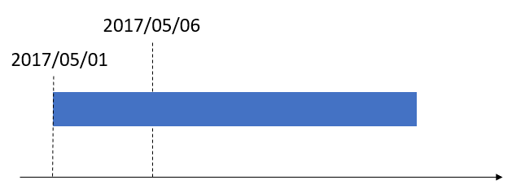

Sichtbarkeit von Materialausnahmen
Important
Dynamics 365 for Finance and Operations hat sich zu speziell entwickelten Anwendungen entwickelt, mit denen Sie bestimmte Geschäftsfunktionen verwalten können. Weitere Informationen zu diesen Änderungen finden Sie im Dynamics 365-Lizenzierungshandbuch.
Im Arbeitsbereich Fertigungsbereichsverwaltung gewähren Ihnen drei Kacheln eine bessere Sichtbarkeit von Ausnahmen bei Rohmaterialien für Produktionsaufträge und Chargenaufträge:
- Nicht freigegebene Materialpositionen, die Aufmerksamkeit erfordern
- Offene Wellen, die Aufmerksamkeit erfordern
- Offene Lagerortarbeit, die Aufmerksamkeit erfordert
Für alle drei Kacheln wird das Rohmaterialdatum der Stücklistenpositionen und Formelpositionen gegenüber dem Arbeitsbereichsdatum verglichen und auch anhand der Filter für Produktionseinheit, Ressourcengruppe und Ressource, die im Menü Mein Arbeitsbereich konfigurieren festgelegt werden. Standardmäßig wird das Arbeitsbereichsdatum auf das aktuelle Datum festgelegt, aber Sie können es anpassen.
Eine unveröffentlichte Stücklistenposition oder Formelposition erfordert außerdem die Aufmerksamkeit, wenn das Rohmaterialdatum der Position mit dem Arbeitsbereichsdatum übereinstimmt oder vor diesem liegt, und wenn es die Kriterien erfüllt, die von den Filtern im Arbeitsbereich definiert werden.
In der folgenden Abbildung stellt der blaue Balken einen Produktionseinzelvorgang dar, der zu einer Ressource geplant wurde. Der Einzelvorgang beginnt planmäßig am 1. Mai 2017 (01.05.2017). Dieses Datum ist das Rohmaterialdatum. In anderen Worten, die Materialien, die diesem Einzelvorgang in den Stücklisten- und den Formelpositionen zugewiesen sind, müssen an diesem Datum fertig sein. Das andere Datum in der Abbildung, der 6. Mai 2017 (06.05.2017) stellt das Arbeitsbereichsdatum dar. In diesem Beispiel liegt das Rohmaterialdatum vor dem Arbeitsbereichsdatum. Das Datum, an dem der Verbrauch des Rohmaterials hätte anfangen sollen, ist deshalb verstrichen, und die Stücklisten- und Formelpositionen erfüllen die Kriterien, dass sie die Aufmerksamkeit erfordern.

Nicht freigegebene Materialpositionen, die Aufmerksamkeit erfordern
Eine Stücklisten- oder Formelposition kann in dreierlei Weise für den Lagerort freigegeben werden:
- Als Teil eines Produktionsauftrags oder einer Chargenauftragsfreigabe
- Als manuelle Freigabe
- Automatisch durch einen Batchauftrag
Weitere Informationen finden Sie unter Stücklisten- und Formelpositionen an den Lagerort freigeben.
Wenn eine Stücklisten- oder Formelposition nicht freigegeben wurde oder nur teilweise freigegeben wurde und wenn das Datum und die Filterkriterien des Arbeitsbereichs erfüllt sind, wird die Position in die Berechnung der Zahl eingeschlossen, die auf der Kachel Nicht freigegebene Materialpositionen, die Aufmerksamkeit erfordern angezeigt wird.
Wenn Sie die Kachel auswählen, wird die Seite An Lagerort freigeben geöffnet. Auf dieser Seite wird die Anzahl der unveröffentlichten Stücklisten- und Formelpositionen angezeigt, die durch die Zahl auf der Kachel angezeigt wird. Die unveröffentlichten Positionen werden im oberen Raster angezeigt. Dieses Raster zeigt die Menge an, die ursprünglich für die Position vorkalkuliet wurde, die Menge, die bereits freigegeben wurde, und die Restmenge, die immer noch freigegeben werden muss. Sie können Positionen aus dem oberen Raster dem unteren Raster hinzufügen. Aus dem unteren Raster können Sie dann die ausgewählten Positionen dem Lagerort hinzufügen. Aus dem unteren Raster können Sie auch die Menge anpassen, die freigegeben werden soll, sodass nur eine Teilmenge freigegeben wird.
Offene Wellen, die Aufmerksamkeit erfordern
Wenn eine Stücklisten- oder Formelposition freigegeben wird, wird sie entweder einer neuen Produktionswelle oder einer vorhandenen offenen Welle hinzugefügt, je nach Konfiguration der Produktionswellenvorlage. Durch die Konfiguration der Wellenvorlage können Sie auch eine Welle einrichten, sodass sie automatisch verarbeitet wird, wenn eine Stücklisten- oder Formelposition freigegeben wird. Wenn die Welle verarbeitet wird, wird Lagerortarbeit für Rohmaterialentnahme generiert. Wenn die Wellenvorlage konfiguriert wird, sodass Wellen nicht zum Zeitpunkt der Freigabe verarbeitet werden, verbleibt die Welle in einem nicht verarbeiteten Status. Die Kachel Nicht verarbeitete Wellen, die Aufmerksamkeit benötigen zeigt die Anzahl von Stücklisten- und Formelpositionen an, die für den Lagerort auf nicht verarbeiteten Wellen freigegeben wurden und die ein Rohmaterialdatum haben, das vor dem Arbeitsbereichsdatum liegt oder mit diesem übereinstimmt. Die Positionen müssen auch durch eine Vorgangsressource verbraucht werden, die für den Filter des Arbeitsbereichs gilt.
Wenn die Kachel ausgewählt ist, wird die Seite Alle Produktionswellen geöffnet. Diese Seite wird durch die Anzahl offener Wellen gefiltert, die Wellenpositionen freigegebener Stücklisten- und Formelpositionen enthalten, die die Kriterien für die Kachel erfüllen. Über die Seite Alle Produktionswellen können Sie manuell die Welle verarbeiten.
Offene Lagerortarbeit, die Aufmerksamkeit erfordert
Die Kachel Lagerortarbeit öffnen, die Aufmerksamkeit benötigt zeigt die Anzahl von Stücklisten- und Formelpositionen an, die für den Lagerort freigegeben wurden, die nicht verarbeitete Arbeit haben und ein Rohmaterialdatum haben, das vor dem Arbeitsbereichsdatum liegt oder mit diesem übereinstimmt. Die Positionen müssen auch durch eine Vorgangsressource verbraucht werden, die für den Filter des Arbeitsbereichs gilt.
Wenn die Kachel ausgewählt ist, wird die Seite Alle Arbeit geöffnet. Diese Seite wird durch die Anzahl offener Arbeitskopfzeilen gefiltert, die Arbeitspositionen freigegebener Stücklisten- und Formelpositionen enthalten, die die Kriterien für die Kachel erfüllen. Über die Seite Alle Arbeit können Sie manuell die Arbeit verarbeiten.